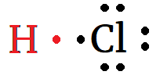

Chemical Bonds
Chemical bonds are the forces that hold atoms together as molecules (H2O) or crystal lattices (NaCl).
- Ionic bonds refer to the electric attraction between positive cations and negative anions in ionic compounds like NaCl.
- A second type of chemical bond is called a covalent bond.
Covalent Bonds
A covalent bond occurs when atoms share valence electrons.
- Chlorine atoms have seven valence electrons.
- Each chlorine atom needs to gain an electron to fill its valence.
- In binary ionic compounds, chlorine gains an electron from a metal to become a chloride ion.

- A chlorine atom can form a covalent bond by sharing one of its electrons with another atom, that also contributes one electron to the shared pair.

- Covalent bonds are illustated on a dot diagram by a line, which represents a shared pair of electrons.
- The shared pair count as valence electrons for both atoms.
Molecular Elements
Chlorine atoms can share electrons with other chlorine atoms to form chlorine molecules.

- Chlorine exists naturally as diatomic (two-atom) molecules, Cl2.
- There are eight elements that exist as diatomic molecules.
- We can remember which ones using the 7+1 Rule.

- Seven elements in the shape of a 7, starting with atomic number 7...
- ...and atomic number 1.
- The elements under the top of the 7 are polyatomic: P4 and S8.
Molecular Compounds
Molecular compounds are compounds formed by covalent bonding between elements to the right of the staircase.
- In Science 10, we do not have to draw dot diagrams or figure out the shape of molecular compounds.
Ionic or molecular? P2O5
- Molecular, since P and O are both to the right of the staircase. (Neither can form a positive ion.)
Ionic or molecular? Fe2O3
- Ionic, since Fe is to the left of the staircase and O is to the right.
Ionic or molecular? H2O
- Hydrogen belongs to both group 1 and group 17; it appears on both sides of the staircase and can form a positive or a negative ion.
- Hydrogen compounds are generally considered molecular.
Naming Molecular Compounds
- For molecular compounds formed from two elements, we name the element furthest left on the periodic table first, then the second one with the suffix -ide.
- We use prefixes (mono-, di-, tri-, tetra-, penta-) to indicate how many of each type of atom are present in each molecule.
- P2O5 is called diphosphorous pentaoxide.
- H2O is called dihydrogen monoxide.
- CCl4 is called carbon tetrachloride.
- Omit the prefix mono- on the first element.
Alternate Names
Some molecular compounds have common names that can be used as an alternative to their systematic names.
- Water is H2O.
- Ammonia is NH3.
- Propane is C3H8.
- Ethanol is C2H6O (or C2H5OH or CH3CH2OH).
- Glucose is C6H12O6.